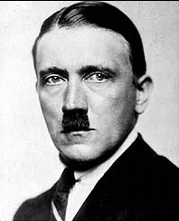

"Adolf Hitler and the Nazi Party came to power in 1933. Most occult leaders believed Hitler was The Great One." The truth is that Hitler was a Satanist. Being a politician, he worked at being diplomatic, given the power of the Christian Churchs at that time. Hitler was the long awaited leader that many German Satanic Lodges were working to bring into being. They needed a leader. Hitler, himself was a member of one of these Satanic Lodges.
"One of the early German Workers party members was publisher Dietrich Eckart, often referred to as the spiritual founder of National Socialism. Eckart saw in Hitler the malleable leader he had been seeking and was soon introducing the new member to the right social circles in Munich and his intellectual friends in the Thule [pronounced too-lee] Society.
Although Eckart's role in metaphysical practices as well as in the foundation of the Nazi party has been marginalized by most historians, it is significant that Hitler clearly understood Eckart's importance." 2
"The inner core within the Thule Group were all Satanists who practiced Black Magic" [Trevor Ravenscroft, The Spear of Destiny © 1973]
As Dietrich Eckart lay dying in 1923, he said, 'Follow Hitler! He will dance, but it is I who have called the tune. I have initiated him into the 'Secret Doctrine', opened his centers in vision and given him the means to communicate with the Powers. Do not mourn for me: I shall have influenced history more than any other German.' 3
There is also plenty of proof that Hitler and the Third Reich were working relentlessly to destroy Christianity in all of its forms.
A quote about Hitler's stance on Christianity from Alfred Rosenberg:
"A number of his closest accomplices shared Hitler's hate toward the Church and his decision to destroy it. Probably the best known among them were Bormann, Himmler, Heydrich, Rosenberg and Goebbels. Gerhard Reitlinger characterizes Himmler as follows: "Himmler's profession became destroying Jews, liberals and priests." 5
According to a note from the Holy See dated March 2, 1943:
"All Catholic schools were closed."
What did Hitler have to say about "pure, original Christianity" and an "Aryan
Christ?"
"Hitler made it clear that he was not interested in an "Aryanized
Christianity" or the "Aryan Jesus" myth promoted by Houston Stewart Chamberlain,
Von Liebenfels, and certain party members. "You cannot make an Aryan out of
Jesus, that's nonsense. What needs to be done you say? I will tell you: we must prevent the churches from doing anything but, what they are doing now, that is, losing ground day by day. But we can hasten matters. The parsons will be made to dig their own graves." he stated." 8
LINK -- Proof that Jesus was a Jew
¹ Frabato the Magician by Franz Bardon, preface page "About The Author"
2Jim Marrs, Rule By Secrecy
3 Ibid
4 Hans-Gunther Seraphim, Das politische Tagebuch Alfred Rosenbergs 1934-1935 und 1939-1940 (Gottingen, 1956)
5 Gerhard Reitlinger, Die SS-Tragodie einer Deutschen Epoche (Munich, 1977)
6 Christian Action for Israel article 'The Church's Struggle with the Third Reich'
7 Ibid
8 Hitler Speaks: A Series of Political Conversations With Adolf Hitler on His Real Aims By Hermann Rauschning, 1st edition, 1939
555 is the kabalistic equivalent of an ancient Hebrew term meaning darkness. Also 555 is the numerical value of the word Necronomicon. Hitler’s Nazi party number was 555. The party began its numbering system at 500 to appear larger than it really was.
Excerpt: "I would like to pass on some of the information which, according to Otti Votavova, she received directly from Franz Bardon. According to her, Adolf Hitler was a member of a 99 Lodge. Besides this, Hitler and some of his confidants were members of the Thule Order, which was simply the external instrument of a group of powerful Tibetan black magicians which used the members of the Thule Order for their own purposes." 1
"I will crush Christianity under my boot like a poisonous toad."
"Judaism, Christianity, Bolshevism are all bound together. Comrades in agitation, born tools of decay, they possess the same talent to destroy the natural structure of society. Bolshevism is the historical and logical continuation of Christianity. It realizes on a technical level what Christianity has done on a metaphysical level."
- Adolf Hitler
"He had never allowed a member of the clergy to a Party meeting or to the burial of a member of the Party. The Judeo-Christian plague was now heading towards its end. He said it was downright horrifying that a religion could ever have been possible which literally gobbled up its God in communion." 4
"At the beginning of October 1941, the number of priests from the diocese "Warthegau," who were under arrest at Dachau, amounted to several hundred; but this number swelled considerably every month as a result of a strong intensification of police measures which resulted in the arrest and deportation of further hundreds of clerics." 6
"An order of the Reich governor, dated August 19, 1941, said that young Germans could receive religious instructions only in the ages from 10 to 18 years old and, furthermore, only at the places of worship and one hour per week, which was to be set between 3 and 5 PM (excluding the days reserved for the exercises of the Hitler-youth). It was further ordered that the police had to be informed in advance regarding the time, the place and the instructional personnel. Several churches were removed from use as places of worship. With many others this happened later on; religious services were limited to specific hours" 7
"Leave the hair-splitting to others. Whether it's the Old Testament or the New,
or simply the sayings of Jesus, it's all the same old Jewish swindle. It will
not make us free. A German church, a German Christianity is a distortion. One is
either a German or a Christian. You cannot be both."